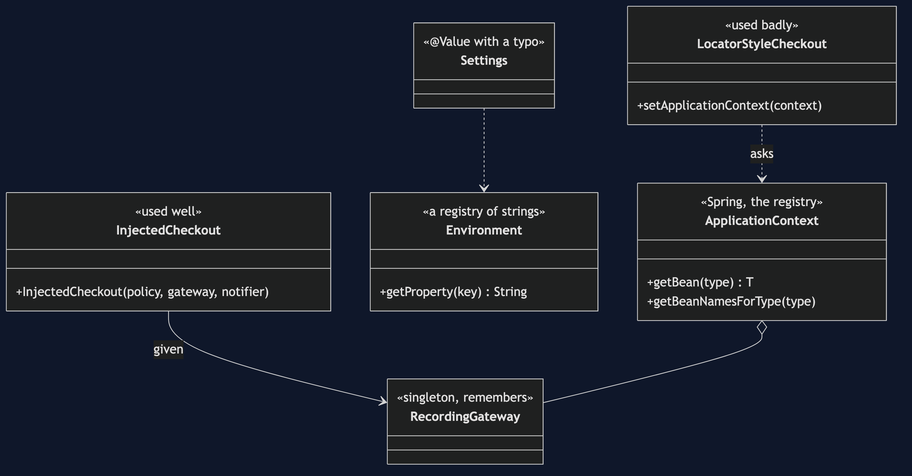
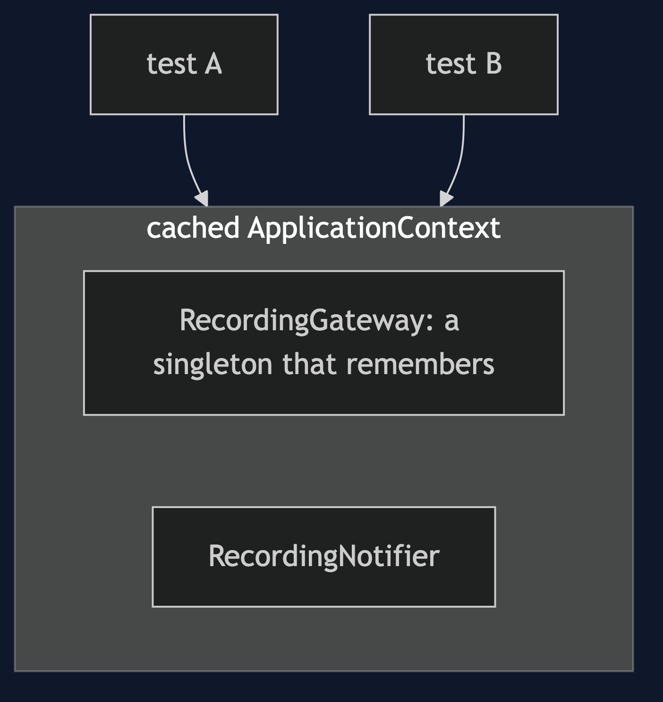
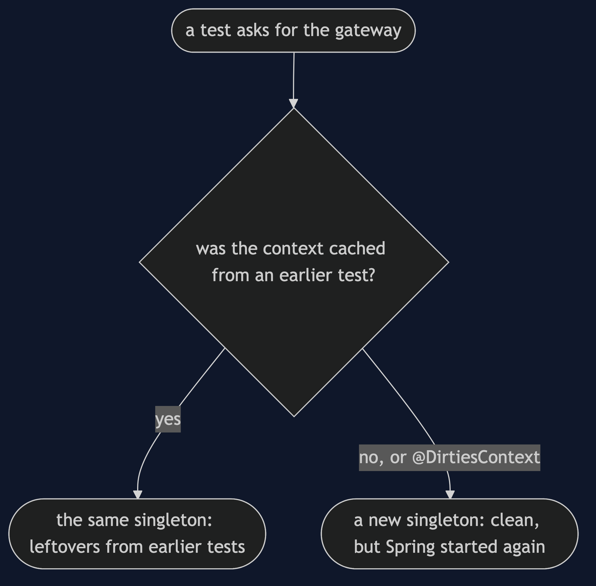
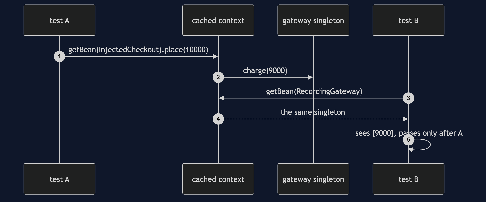
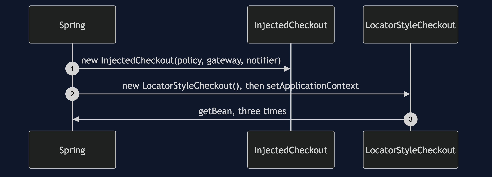
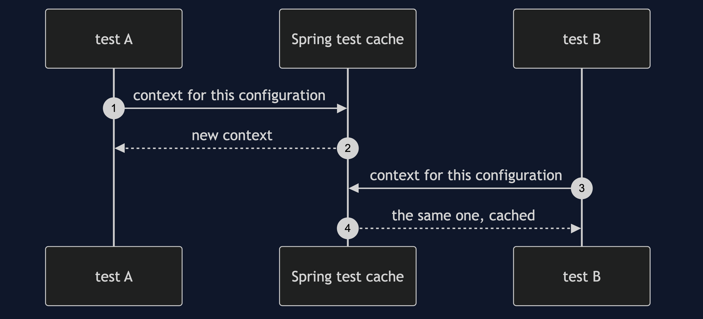
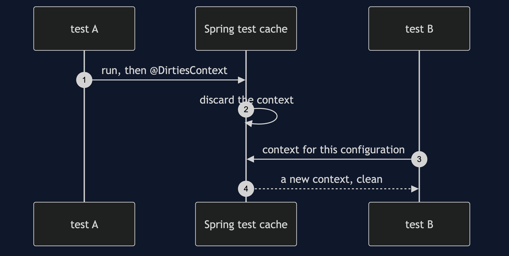
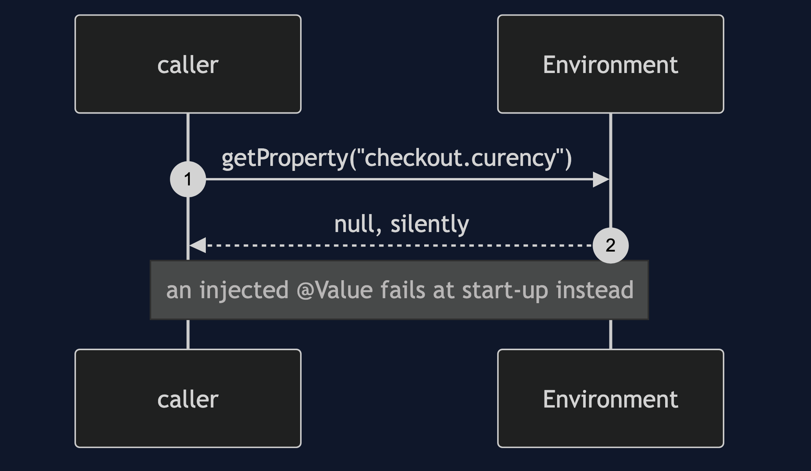

Registry with Spring Pattern
src/main/java/com/jk/explore/registryspring/
├── RegistrySpringApplication.java the Spring Boot entry point and the six acts
│
├── domain/ ← the partner's collaborators, with @Component added
│ ├── DiscountPolicy.java LoyaltyPolicy.java
│ ├── PaymentGateway.java RecordingGateway.java
│ └── Notifier.java RecordingNotifier.java SmsNotifier.java a second Notifier
└── app/
├── InjectedCheckout.java the registry used well: never called
├── LocatorStyleCheckout.java the registry used badly: getBean, three times
└── Settings.java @Value with a typoSpring's ApplicationContext is a registry: getBean(PaymentGateway.class). It fixes most of what the hand-built registry got wrong, and it still leaks shared state between tests.
This project is the framework version of Registry. That project built a static registry by hand and listed its costs. Spring's ApplicationContext is a registry too, built far better: declared with @Component, checked when it starts, and mostly never called. It does not re-teach the pattern. It shows what Spring fixes, and the failure that is Spring's own: a cached context whose singletons remember what earlier tests did.
Run
./gradlew runSix acts. The partner project, Registry, built a static registry by hand and listed its costs. Spring's ApplicationContext is a registry too, built far better, and this project shows what it fixes and what it leaves.
REGISTRY WITH SPRING — the context is a registry you did not write
ONE. The ApplicationContext is the registry.
Registry.get(PaymentGateway.class) in the partner project is context.getBean(PaymentGateway.class) here: RecordingGateway
registered by declaration: @Component on a class. beans of type PaymentGateway: [recordingGateway]
no static map, no register() calls scattered through the code, and a missing bean fails at start-up.
TWO. Used well, nobody calls it. Used badly, it is the hand-built registry again.
InjectedCheckout is given its collaborators: receipt-1
LocatorStyleCheckout calls context.getBean three times: receipt-2
same result. but LocatorStyleCheckout's constructor takes nothing, and its dependencies are invisible again.
new LocatorStyleCheckout() compiled, and threw NullPointerException: it needs Spring to hand it the context.
THREE. The failure of its own: shared state, through the context cache.
Spring's test support caches a context and reuses it across tests with the same configuration.
test A ran on the shared context and charged once. the gateway is a singleton, so it remembers: [9000]
test B, on the same cached context, starts by expecting a clean gateway. it sees: [9000]
that is the hand-built registry's order-dependent test failure, in Spring. the tests in this project prove it.
a fresh context (what @DirtiesContext gives) sees: [], at the price of starting Spring again.
FOUR. The Environment is a registry of strings.
checkout.currency = GBP
checkout.curency (a typo) = null, where the right answer was GBP. no error, no warning.
a required @Value with the same typo fails when the context starts:
Could not resolve placeholder 'checkout.curency' in value "${checkout.curency}"
the untyped lookup is silent; the injected one is not.
FIVE. Asking by type is ambiguous the moment there are two.
context.getBean(Notifier.class) with two Notifiers: NoUniqueBeanDefinitionException
found: [recordingNotifier, smsNotifier]. a run-time error at the call site, not a compile error.
SIX. The verdict.
Spring's context is the registry done well: declared, checked at start-up, and mostly never called.
keep calling getBean to main, to tests and to framework glue. in business code, inject instead.
a getBean inside a business class is a Service Locator, with all its costs.
and keep singleton state out of anything a test shares.Test
./gradlew test4 test classes, 11 test methods, offline, each Spring context started inside the test, with no server.
Technologies and versions
| What | Version | Why it is here |
|---|---|---|
| Java | 21 | The repository standard, via the Gradle toolchain block |
| Gradle | 9.2.1 | The wrapper in this directory; no separate install needed |
| Spring Boot | 4.1.1 | The container, whose ApplicationContext is the registry |
| Spring Framework | from Spring Boot 4.1.1 | ApplicationContext, Environment, and the test context cache |
| JUnit 5 | 5.10.2 | Test runner |
No web starter and no database. See docs/dependencies.md.
Learning Material
| Document | What it covers |
|---|---|
docs/problem-statement.md | The partner's checkout, and what is new |
docs/registry-with-spring-pattern-explained.md | What Spring fixes, and the failures that are its own |
docs/class-diagram.md | The types |
docs/architecture-diagram.md | One cached context, shared |
docs/data-flow-diagram.md | A test's view of a singleton |
docs/sequence-diagram.md | Written for a listener with the screen off |
docs/uml-diagram.md | Four sequences |
docs/animation.html | The six acts in a browser |
docs/prerequisites.md | What you need to know |
docs/session.md | A one-hour taught session |
docs/spec.md | The generated specification |
docs/youtube.md | Title, description and chapters |
docs/dependencies.md | What Spring is, what it costs, and that skipping this project loses none of the pattern |
The pattern in one picture

Where each piece sits

How one request moves

Who calls whom, in order

All four sequences




Video
Built from video/scenes.py by video/build_video.sh. The rendered file is not committed; see the repository README for why.
Where you have already met this
Every @Autowired lookup goes through it, and every @SpringBootTest shares one.
When this is too much
Never for the context itself: you already have one. The cost is in calling it.
Where this sits
This project pairs with Registry, and is a framework version in foundational-design-patterns.